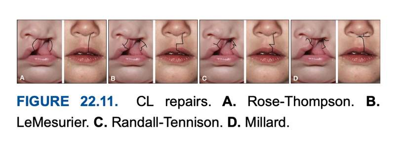
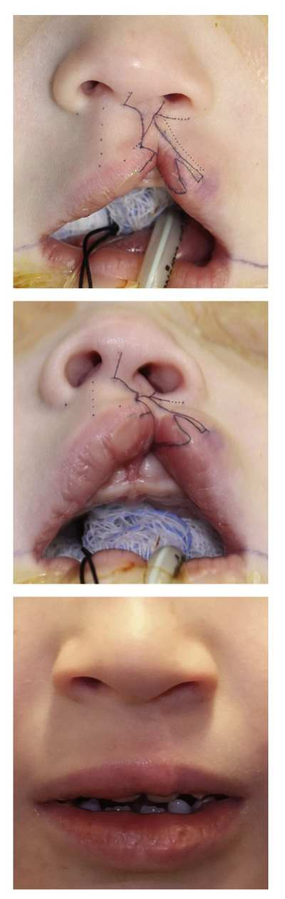
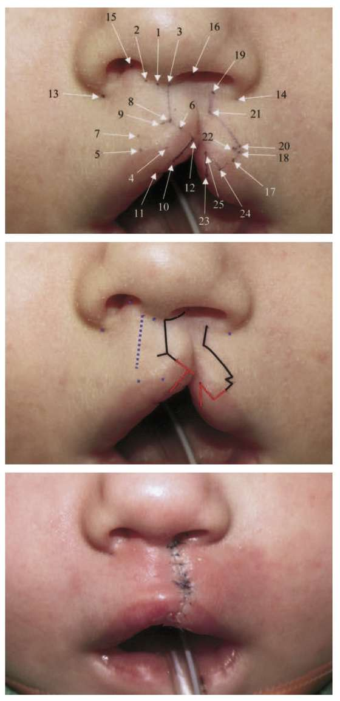

01 Pierre Robin sequence 診斷三聯症§ CRF · A 顱顏症候群/畸形
三個特徵必須「同時、無條件」成立才叫 PRS；micrognathia 是原發缺陷，其餘兩項是骨牌效應。
核心診斷三聯症矩陣（臨床直覺反射！🚨） ：在臨床上，必須同時、無條件 滿足以下三大特徵聯套（combination of three features）方能確診。
小下頜畸形（micrognathia） ：下頜骨三維發育嚴重後縮與短小，此為原發性胚胎起源 （primary defect）。舌下垂（glossoptosis） ：下頜骨基底短小導致舌根肌肉失去向前支撐力，舌頭向後向下塌陷下垂。上呼吸道阻塞 （upper airway obstruction）。⭐ 記憶錨點 記憶關鍵在「sequence」二字 —— micrognathia 是因 ，glossoptosis 與 airway obstruction 是被推倒的骨牌。因果順序講錯，這題就沒了。
02 四大顱顏症候群的顎骨與咬合表現§ CRF · A 顱顏症候群/畸形 · F 正顎/咬合
Apert 是四者中唯一明列「下顎前突」的一列，最容易漏記。
症候群 顎骨與咬合表現 Crouzon 中臉發育不良，牽涉眼眶、顴骨、鼻、上顎 Apert ⭐ 下顎前突 （mandibular protrusion）＋ class III ＋ 前開咬 （anterior open bite）＋ 上顎發育不良 ＋ 牙齒明顯而擁擠 Treacher Collins ⭐ 上顎與下顎在前後徑皆發育不良，但下顎的發育不良特別嚴重 —— 特徵為短的下顎枝 （short ramus）與明顯彎曲且向後旋轉的下顎角前切跡 （antegonial notch） Muenke 中臉發育不良併牙齒擁擠
🚨 考場地雷 Apert 那一列是最容易被記漏的：它是四者中唯一明列「下顎前突」 的 —— ⚠ 但注意，它的 class III 同時有下顎前突與上顎發育不良兩個成分 ，與 Crouzon 的純中臉問題 不同。這是一組很好的鑑別考點。
03 咽弓（Pharyngeal arch）衍生物總表§ CRF · 胚胎學基礎
第 5 弓在人類不存在；stylopharyngeus 是第 3 弓唯一一條肌肉；cricothyroid 是喉內肌中唯一不歸 recurrent laryngeal 管的。
速記版
咽弓 骨骼 肌肉 神經 動脈 1（下頜） Meckel 軟骨→malleus 錘骨、incus 砧骨；下頜、上頜、顴、顳骨鱗部 咀嚼肌（＋mylohyoid、二腹肌前腹、tensor tympani、tensor veli palatini） CN V 三叉 maxillary a.（上頜動脈） 2（舌骨 hyoid） Reichert 軟骨→stapes 鐙骨、styloid、舌骨小角＋上半 顏面表情肌（＋stapedius、stylohyoid、二腹肌後腹） CN VII 顏面 stapedial a.（鐙骨動脈） 3 舌骨大角＋下半體 stylopharyngeus、上中咽縮肌 CN IX 舌咽 總／內頸動脈 4＆6 喉軟骨（甲狀、環狀、杓狀…） 咽縮肌、發聲肌、軟顎肌（除 tensor veli palatini）、上食道肌 CN X 迷走 主動脈弓、右鎖骨下、肺動脈、動脈導管
← 表格可左右滑動 →
完整版（含考點標記）
弓 神經 軟骨衍生物 肌肉 動脈 1 ⭐ V（三叉） Meckel's：錘骨、砧骨、錘骨前韌帶、蝶下頜韌帶 咀嚼肌群、mylohyoid、二腹肌前腹、tensor tympani、⭐ tensor veli palatini 上頜動脈 2 ⭐ VII（顏面） Reichert's：鐙骨、莖突、莖突舌骨韌帶、舌骨小角＋體上部 表情肌全體、stapedius、stylohyoid、二腹肌後腹 鐙骨動脈 3 ⭐ IX（舌咽） ⭐ 舌骨大角 ＋ 體下部 ⭐ Stylopharyngeus（唯一一條） 總頸動脈 ＋ 內頸動脈近端 4 ⭐ X — superior laryngeal 甲狀軟骨、會厭軟骨 ⭐ Cricothyroid、⭐ Levator veli palatini 、咽縮肌群（上中下） 左：主動脈弓；右：右鎖骨下動脈近端 ⚠ 5 — ⭐ 人類無此弓 — — 6 ⭐ X — recurrent laryngeal 環狀、杓狀、小角、楔狀軟骨 ⭐ 除 cricothyroid 外的所有喉內肌 左：肺動脈近端＋動脈導管；右：右肺動脈近端
← 表格可左右滑動 →
⭐ 三組必背的「同名不同弓」
① 顎的兩條張肌 —— 與先前讀的 IVV 直接接軌
弓 神經 功能 ⭐ Tensor veli palatini 1 V3 開耳咽管 ⭐ Levator veli palatini 4 X／咽叢 提軟顎、顎咽閉合
← 表格可左右滑動 →
⭐ 記憶錨點 ⭐ 這就是 Ch.21.10 把「complete IVV（levator）」與「hamulus 處鬆開 tensor tendon」分列兩條 的胚胎學根據 —— 它們從來不是同一個系統。
② 中耳兩條小肌 ：tensor tympani（1，V3） vs stapedius（2，VII）—— 與其附著的聽小骨來源一致。③ 二腹肌 ：前腹（1，V3） vs 後腹（2，VII）。④ 喉內肌 ：cricothyroid（4，superior laryngeal） vs 其餘全部（6，recurrent laryngeal）。
04 唇顎裂全期治療黃金時程表§ CRF · B 唇顎裂/唇部重建
顎裂修補要卡在 12 個月語言發展前；ABG 要卡在恆犬齒萌發前；第 2 階段鼻整形絕對不能動鼻中隔。
📅 Professor's Master Timeline （GB & Neligan 聯合應證）
病患年齡 治療階段與核心術式 手術目的與考場地雷細節 0 – 3 個月 術前嬰兒牙顎矯正 利用鼻牙槽塑形（NAM）縮小裂隙寬度、牽引牙槽骨，並利用鼻支架預先撐起塌陷的下側鼻軟骨（LLC），減輕後續手術張力。 3 – 6 個月 一期唇裂修補術 唇部 ：恢復垂直高度與口輪匝肌的連續性。教授額外補充：教科書外常考的黃金準則為「Rule of 10s 」，即體重 10 磅、血紅素 10 g/dL、白血球不超過 10,000、出生 10 週，作為適合手術的安全門檻。 鼻部（第 1 階段） ：進行鼻尖與下三分之一的初步復位，僅作有限度 的軟骨剝離與懸吊，絕對避免破壞生長潛力。也可合併執行牙齦骨膜成形術（GPP）。9 – 12 個月 一期顎裂修補術 致命考點：為什麼是這個時間點？ 因為必須在「兒童發展出關鍵語言能力（大約 12 個月大）」之前 完成，否則會發展出代償性的不良發音習慣（maladaptive errors）。通常會一併請耳鼻喉科研判是否置放中耳通氣管以治療耳咽管功能不全。3 – 5 歲 顎咽閉合不全治療 若術後經語言治療仍有嚴重的顎咽閉合不全（hypernasality／鼻音過重），需進行咽瓣手術（pharyngeal flap）或二次語音手術。 4 – 6 歲 第二階段鼻整形 目的 ：在入學前面對同儕壓力前，改善鼻部外觀。術式（第 2 階段） ：核心在於矯正 LLC 的異常位置與鼻前庭蹼狀攣縮（vestibular webbing）。考場防雷（N3-21.10） ：這個階段「絕對不能動鼻中隔 （septal surgery deferred）」以免破壞中面部生長，且「不進行軟骨移植 （no cartilage grafting）」。7 – 10 歲 齒槽骨植骨重建 致命考點 ：時機必須抓在「恆犬齒（permanent canine）萌發之前 」！目的 ：關閉殘留的口鼻瘻管、提供萌發犬齒的骨骼支撐，並穩定上頜牙弓的連續性。青少年期 齒列矯正 進行最終的術前或決定性牙齒矯正，替未來的正頜手術做準備。 骨骼發育成熟 正頜手術 正頜 ：唇顎裂患者常伴隨嚴重的「中臉發育不全／上頜後縮（midfacial hypoplasia）」，需執行 Le Fort I 上頜前移術 ，必要時合併下頜手術。鼻部（第 3 階段） ：此時骨骼已發育成熟，終於可以進行徹底的「開放式鼻中隔鼻整形 」，大刀闊斧地處理鼻中隔彎曲、並廣泛使用自體軟骨移植（如肋軟骨）進行精細的結構重建。
05 Calnan's triad（黏膜下顎裂）§ CRF · B 唇顎裂/唇部重建
zona pellucida、bifid uvula、硬顎後緣可觸摸的凹陷 —— 三項齊備。
Zona pellucida （軟顎中線透明帶）Bifid uvula （懸雍垂分岔）硬顎後緣可觸摸的凹陷 （notch of the posterior hard palate）
06 單側唇裂修補術式總對照（Rose–Thompson → Fisher）§ CRF · B 唇顎裂/唇部重建
所有術式都在解同一題 —— 裂側唇高不夠。差別只在「補的組織從哪來、疤痕落在哪」。
⭐ 記憶錨點 一句話核心 ：⭐ 裂側唇高不夠。 差別只在「補的組織從哪來、疤痕落在哪 」。整章的比較表都只是這句話的展開。

FIGURE 22.11 CL repairs. A. Rose–Thompson. B. LeMesurier. C. Randall–Tennison. D. Millard. 主要設計對照
術式 補長度的來源 疤痕位置 ⭐ 主要優點 ⚠ 主要缺點 直線縫合 切口本身的弧度 完全沿 philtral column 疤痕最像人中脊 ⚠ 寬裂時長度嚴重不足、notching 三角瓣 ⭐ 外側唇的三角瓣插入內側唇下部 ⚠ 橫越唇下三分之一 ⭐ 幾何精確、延長可靠、Cupid's bow 保存好 ⚠ 破壞 philtrum 次單位、日後極難修改、易過度延長 Rotation–advancement ⭐ 內側唇向下旋轉，缺損由外側唇前推填補 大致沿 philtral column，⚠ 但上三分之一彎向對側 ⭐ cut-as-you-go 彈性、C-flap 可用於鼻檻／columella ⚠ 破壞上三分之一次單位；寬裂需大 back cut → 外側唇過度內移 → micronostril （無明確矯正法） ⭐ Extended 同上，但 ⭐ back cut 移到 columella，缺損由 C-flap 上旋填補 ⭐ 完全沿次單位界線 ⭐ 不需外側唇填缺損 → micronostril 風險降低、免 perialar 切口；C-flap 上旋順帶提起 medial crura、延長 columella；⭐ 提供 medial approach 鼻整形 ⚠ 兩個標記點極敏感（頂點太偏裂側 → columella 過窄）；學習曲線陡 ⭐ Anatomic subunit ⭐ 白唇緣正上方的小三角瓣 ⭐ 沿次單位「接縫」，僅底部一小段橫向 ⭐ measure-twice-cut-once，可在每一步前驗證設計；以標準人體測量點為基礎，自動適應任何裂寬 ⚠ 彈性低，標記錯誤即難補救；仍有一小段橫向疤
← 表格可左右滑動 →
五個字的口訣
術式 一個關鍵字 疤痕在哪 Rose–Thompson ⭐ 弧 沿人中脊（但長度不夠） LeMesurier ⭐ 方 ⚠ 越過兩條人中脊 Tennison–Randall ⭐ 三角 ⚠ 橫越唇下部 Millard ⭐ 旋轉 ⚠ 越界在唇上部 Mohler–Cutting ⭐ 上移 ✅ 全在次單位界線 Fisher ⭐ 量 ✅ 次單位接縫，僅小三角
演化 ＝ 疤痕一路往「不礙眼的地方」搬
唇下部（三角瓣） → 唇上部（Millard） → 鼻柱（Mohler） → 白唇緣上方（Fisher）
⭐ 記憶錨點 ⭐ 越晚的術式，橫向疤痕越短、越靠近次單位界線。 這條軸線把六個名字串成一條線，不用死背發明年代。
Back cut 放哪裡 ＝ 誰來填缺損
術式 Back cut 放哪 誰來填 副作用 Millard 上唇 ⚠ 外側唇 micronostril Mohler–Cutting 鼻柱 ⭐ C-flap ⚠ 鼻柱變窄 Mulliken ⭐ 不做 back cut（改 columellar releasing incision） — 為避開鼻柱變窄 Fisher 白唇緣正上方 ⭐ 外側小三角 彈性低
← 表格可左右滑動 →
兩大流派
⭐ 幾何派（三角瓣） ：Tennison–Randall → Fisher。特性 ：先量後切，延長量有保證，可重現性高。 ⭐ 旋轉派 ：Millard → Mohler → Cutting／Mulliken。特性 ：邊做邊調，上限高但吃經驗。 ⭐ Fisher ＝ 兩派混血 （GS 原話：rotation advancement 與 Randall 的 blend）。 最後三個防混淆
🚨 考場地雷 ⚠ Mohler ≠ Mulliken ：都想避開上唇疤，但 Mohler 加大鼻柱 back cut 、Mulliken 完全不做 back cut 。Noordhoff 三角瓣是「紅唇」的 （補 tubercle、防 whistling），與上述白唇設計無關，任何術式都能加。GS 結論 ：沒有共識，經驗比術式重要。
術中標記對照

Mulliken 標記法（雙側完全性唇裂）。上、中：術前設計 —— ⭐ 不做 back cut，改以 columellar releasing incision 取得長度；下：修復後外觀。 
Fisher anatomic subunit 標記法。上：標準人體測量點編號（measure twice, cut once）；中：據測量點畫出的切口設計（黑＝白唇、紅＝紅唇小三角）；下：縫合完成，⭐ 疤痕落在次單位接縫、僅白唇緣上方一小段橫向。
07 唇顎裂治療年齡閾值速查（含出處）§ CRF · B 唇顎裂/唇部重建
每個手術都綁一個年齡閾值；⭐ 定型裂鼻整形永遠排在正顎手術「之後」。
年齡 事件 出處 出生後 1–6 週起 NAM（單側裂） Ch.19.3 §4 3–4 個月 ⭐ 初次唇修補 ＋ 初次鼻整形（輕微過度矯正、限制剝離）＋ 鼻底關閉 ± GPP Ch.19.3 9–12 個月 顎成形術（六項預防廔管的要素） Ch.21.10 §5.2 4–6 歲（入學前） ⭐ 中期鼻整形（只矯正 LLC 位置與前庭蹼）；⚠ 不做軟骨移植、不碰鼻中膈 Ch.21.10 §6.1 學齡前完成 ⭐ 所有 VPI 手術（6 歲前每年語言評估） Ch.21.10 §5.1 6–12 歲（混合齒列） ⭐ 齒槽骨移植（Neligan：犬齒萌發前、9–11 歲；GS：犬齒牙根形成一半） Ch.21.10 §6.2 ＋ GS 青春期後 ⭐ 鼻中膈手術才可施行 Ch.21.10 §6.1 ⭐⭐ 女 14–16／男 17–21 歲 ⭐⭐ 正顎手術（骨骼成熟後；上顎十幾歲中期、下顎十幾歲晚期長完） Ch.21.11 §5.4 ⭐⭐ 正顎「之後」 ⭐⭐ 定型（二期）裂鼻整形（女 14–16／男 16–18） Ch.21.10 §6.2 ＋ Ch.21.11 §5.1b
📌 補充 這則是年齡閾值＋出處 的速查版；各階段「為什麼是這個時間點」的推理寫在〈唇顎裂全期治療黃金時程表〉那一則。兩則的年齡區間取自不同教科書段落，⚠ 對答時以題目引用的版本為準 。
08 Treacher Collins（TCS）年齡閾值表§ CRF · A 顱顏症候群/畸形
聽力最優先（出生數週內）；⭐ 外耳自體重建 >8 歲是第一選擇、植體式 >6 歲是第二選擇。
年齡 動作 出生後數週內 聽力檢查 ASAP → 需要則助聽器；監測吞嚥餵食 → 會診前語言期語言治療師 >2 歲 考慮腺樣體扁桃體切除 4 歲起 定期檢查咬合與齒列發育 >4 歲 BAHA 植入（⚠ 須把日後的外耳重建一併納入考量） <6 歲（眼／顴） （真皮）脂肪移植／上瞼肌皮瓣／骨膜下顴部提升 >6 歲（外耳） 植體式外耳重建（第二選擇 ） 6–17 歲（眼／顴） 客製植體 >8 歲（外耳） ⭐ 自體外耳重建（第一選擇 ） 12 歲 心理諮詢（特別在升上中學與青春期） >18 歲／骨骼成熟 雙顎手術＋矯正；顴／眼瞼重建（脂肪、提升、骨移植）；鼻中隔矯正；若想生育則遺傳諮詢 通常不在一歲內 顎成形術 術後 6–12 週 重複睡眠檢查
🚨 考場地雷 ⚠ 外耳那兩格最容易對調：植體式（第二選擇）>6 歲 、自體（第一選擇）>8 歲 —— 年紀大的那個才是首選 ，因為要等肋軟骨量夠。另外 BAHA >4 歲 要先把外耳重建的切口位置算進去，順序講反就扣分。
09 Orbital shift 三術式對照（Box-shift／Bipartition／Monobloc）§ CRF · C 顱縫早閉/顱骨 · F 正顎/咬合
Box-shift 是平移、facial bipartition 是旋轉；只有 box-shift 不改變咬合，只有 monobloc 不矯正眼距過寬。
層級關係
Orbital shift（眼眶移位） 底下只有兩個術式：
Box-shift osteotomy —— 只動眼眶，平移 （translation）Facial bipartition —— 連上頜一起動，旋轉 （rotation）📌 補充 Monobloc 不屬於 orbital shift —— 因為它做的是前徙 ，不是橫向移位 。但考題常把三者放在同一組選項裡比較，所以一起記。
三者對照
Box-shift osteotomy Facial bipartition Monobloc 移動單位 兩個眼眶各自成「盒」 左右兩個半臉 （眼眶＋上頜連為一體）額骨＋眼眶＋上頜整塊 運動方式 向內平移 繞中線楔形向內旋轉 向前前徙 矯正眼距過寬 ✅ ✅ ❌ 矯正中臉後縮 ❌ ❌ ✅ ⭐ 改變咬合 不改變 改變 改變 上頜弓 不動 可擴張 V 形狹窄弓、關閉前開咬 整塊前移 眼裂軸 不變 可把下斜眼裂轉正 不變
← 表格可左右滑動 →
⭐ 記憶錨點 兩個開關就分得完：①「動不動上頜」 → box-shift 不動上頜，所以唯一不改變咬合 ；②「橫向 vs 前後」 → 橫向的（box-shift、bipartition）矯正眼距過寬 ，前後的（monobloc）矯正中臉後縮 。
🚨 考場地雷 只有 facial bipartition 同時具備「矯正眼距過寬」＋「擴張 V 形狹窄上頜弓、關閉前開咬」＋「把下斜眼裂（downslanting palpebral fissure）轉正」三項 —— 這正是它在 Apert 常被選用的理由。
10 Fibrous dysplasia —— 背景數字與 Zone 1–4 處置§ CRF · C 顱縫早閉/顱骨
積極度由「美觀權重 ÷ 手術代價」決定：Zone 1 完整切除加即時骨移植，Zone 3 除非視神經壓迫否則不碰。
FD 背景數字
盛行率 ：約 1/4,000–1/30,000 ⭐ 分型 ：單骨型 80–85%／多骨型 15–25% 顱顏侵犯 ：多骨型 50–100% ；單骨型僅 10% 顱顏好發序 ：上頜骨 > 下頜骨 > 額 > 蝶 > 篩 > 頂 > 顳 > 枕 影像三型 ：pagetoid（混合）／sclerotic（磨砂玻璃 ，顱顏最常見）／radiolucent 或 cystic症候群 ：Mazabraud、Jaffe–Lichtenstein、McCune–Albright （多骨型是症候群的必要條件 ；MAS 好發女性）治療 ：藥物僅能處理疼痛與減少骨吸收，主力仍是手術 🚨 考場地雷 惡性轉化 0.5–4% （骨肉瘤、纖維肉瘤、軟骨肉瘤）—— 多骨型 與曾照射過的部位 風險較高。這也是 FD 不做放射治療 的原因。
四個分區（Zone 1–4）
Zone 解剖範圍 處置 ⭐ 1 額眶、顴骨、上顎骨上部 完整切除 以降低復發；立即重建，通常用骨移植 2 有頭髮覆蓋的顱骨 保守 —— 削骨／磨骨修飾輪廓3 中央顱底、岩乳突、翼骨 盡量不開 ；⚠ 僅觀察 ，除非出現症狀（如視神經壓迫造成視力障礙）→ 此時做視神經管減壓 4 含牙骨 —— 上頜齒槽與下頜骨 保守 ；切除含牙骨會造成重大功能損害
為什麼「第一區犧牲最大」
積極度不是由病灶大小決定 ，而是由「美觀權重 」與「手術代價 」的比值決定：
Zone 美觀重要性 手術代價 → 結論 1 最高 （正面看得見）低 （無重要神經血管、無牙齒）全切除 2 低（頭髮遮住 ） 低 削骨即可 3 低（深部看不見） 最高 （顱底神經血管）不動 4 中 高 （牙齒、咬合、下頜功能）保守
← 表格可左右滑動 →
⭐ 記憶錨點 一句話：能看見又切得起的地方就徹底切；看不見或切不起的地方就別碰。 代價低 ＋ 效益高 」的區域 —— 原文用詞是 most esthetically apparent area 。
為什麼要「切乾淨」
FD 的病理是 GNAS1 突變（20q13.2-13.3）→ cAMP 活性持續 → 骨形成間葉細胞無法成熟 ，留下不成熟骨小樑陷在異常纖維組織中、持續代謝卻永遠完成不了重塑 。
⭐ 記憶錨點 這是「不會自己停止 」的病變 → 部分切除必然復發 。所以 Zone 1 選擇 complete resection ＋ 即時骨移植重建 。